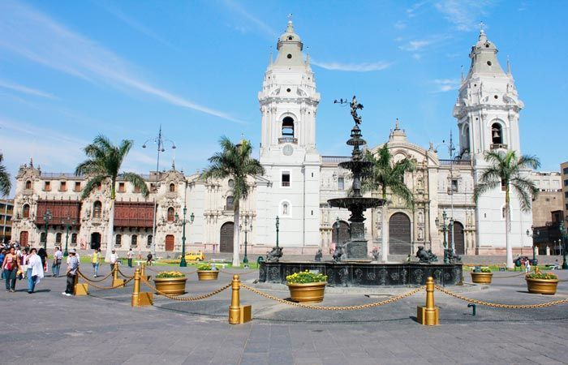

Catedral de Lima
Es una construcción que data de la época colonial, del siglo XVI y XVII, la primera construcción era de estilo barroco pero fue destruido por el terremoto del 1746 y reconstruido con otro estilo arquitectónico llamado neoclásico pero aún se puede ver en la fachada el estilo barroco del siglo XVI. Casi todo el esqueleto de la catedral es de madera, asi es aunque no lo creas, es decir tiene un esqueleto de madera recubierto con yeso.